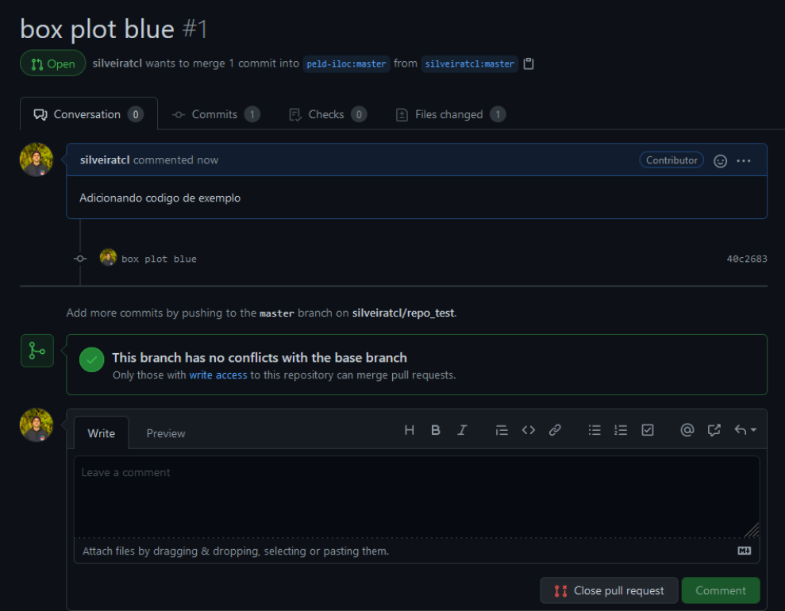

Github LABAR
1. Visão Geral
Com o objetivo de documentar procedimentos e armazenar recursos para processamento, divulgação e análise dos dados obtidos pelo Projeto Coral Sol foi idealizada a criação de um perfil no Github.
2. Indicações de uso
- Armazenar recursos para curadoria e acesso aos bancos de dados
- Atuar como um respositório de dados públicos e privados do projeto (sites, web-apps, manuais, algoritmos, etc…)
- Ser um repositório para o compartilhamento de dados e código entre a equipe
- Opção de repositório de dados de publicações
Para quem não está familiarizado com o controle de versão e as ferramentas Git e Github, a seguir é feita uma introdução ao tema.
3. Introdução ao Controle de Versão

Quem nunca nomeou um arquivo como “final”? Depois de algumas releituras e correções você salva com outro nome, “final_2”. Depois desta versão, alguém analisa e faz observações, e você prontamente salva o arquivo como “final_2_fulano_version”, e assim por diante. Imagine este mesmo documento ficando na “geladeira” por alguns meses e você quer retornar de onde parou. Ainda existe a opção de alguém fazer alterações e não mudar o nome do arquivo. Neste momento fica muito difícil saber onde parou, ainda mais podendo ficar na dúvida de qual é o arquivo mais antigo.
Nomear arquivos com diferentes nomes é uma maneira intuitiva de se fazer controle de versão de arquivos, até pode funcionar para problemas menos complexos. No entanto, quando trabalhamos em grupos de pesquisa, com várias pessoas editando textos e códigos, fica difícil gerenciar o histórico de versões de um arquivo, ainda mais vários. Felizmente, hoje existem ferramentas que nos auxiliam no controle de versão, tanto em nossas máquinas quanto em repositórios online.
4. Git
Lançado em 2005, GIT é um software de controle de versão livre. Esta ferramenta permite o rastreio de alterações em qualquer tipo de conjundo de arquivos. O uso do controle de versão permite velocidade no trabalho e integridade de dados, muito indicado em trabalhos em grupo. Ainda, permite a evolução dos projetos de forma não linear, possibilitando a criação de diferentes abordagens sem comprometer os dados originais. Todo o diretório de arquivos onde o Git está operando toda e qualquer mundança é identificada e recuperável.
Linus Torvalds criou o Git para o desenvolvimento do sistema operacional Linux Kernel. Segundo o próprio autor Git significa Git - The Stupid Content Tracker. Existem outros programas de controle de versão, no momento o Git é um dos mais utilizados pela comunidade de desenvolvedores.
O controle de versão Git assemlha-se a uma árvore, tendo um ramo principal chamado de master. O master pode ter ramos paralelos que podem evoluir juntamente com o master, estes são chamados de branch , e cada um deles tem um nome. Cada círculo na figura corresponde a uma versão do diretório, ou um commit . Os ramos branch podem ser criados por diferentes pessoas ou por um mesmo usuário. A aplicação prática da criação de ramos é, por exemplo, explorar diferentes tipos de abordagens estatísticas distintas da usada no master.
“Branching” em um repositório Git
Imagine que após alguns testes, os usuários que estão trabalhando neste diretório discutem e avaliam que as contribuições podem ser incorporadas ao master. Note que a versão original antes da criação dos branch#1 e #2 permanece preservada. Caso nenhuma das abordagens seja ideal, os usuários podem decidir a voltar para as versões anteriores, criar um novo branch e explorar outras alternativas. Tudo isso sem comprometer o que já foi realizado.
5. Github

Github é um serviço de hospedagem na internet para desenvolvimento de software e controle de versão (Git). Em uma definição mais simplificada, pode-se dizer que o Github seria uma rede social onde desenvolvedores compartilham repositórios de arquivos e trabalham em equipe, tudo com controle de versão. No Github é possivel seguir e acompanhar perfis pessoais e de organizações, além de acompanhar projetos em desenvolvimento. Cientistas estão cada vez mais usando o Github para compartilhamento de dados e códigos de publicações associados a publicações científicas.
Diferenças entre Git e GitHub:
| Git | Github |
|---|---|
| É um software | É um serviço |
| Instalado localmente em sua máquina | Está na rede |
| Usado em linha de comando | Apresenta uma interface gráfica |
| Gereciar diferentes versões em um repo Git | Armazenar uma cópia de seu repositório Git |
| Funcionalidades VCS para gerenciar versões | Funcionalidades VCS dentre outras |
*VCS - Version Control System
6. Instalando Git-Github-RStudio
Para poder utilizar o Git, Github e compartilhar projeto realizados com o Rstudio, você precisa antes fazer o seguinte:
6.1 Configurando o Git no RStudio
Abra o RStudio e agora vamos configurar o Git para identifdicar você. No RStudio ache a aba Terminal e insira os seguintes comados, um de cada vez.
Substitua USER e USER@SEUEMAIL.COM com o seu. No meu caso seria silveira.tcl e silveira.tcl@gmail.com;
# mostrando a versão do git em seu computador
git --version
# mostrando o caminho das pastas em seu Mac/Linux
which git
# mostrando o caminho das pastas no Windows
where git
# troque USER com o seu nome de usuário do Github
git config –-global user.name USER
# troque USER@SEUEMAIL com o seu email resgistrado no Github
git config –-global user.email USER@SEUEMAIL.COM
# use git "merge" (default) para resolver possíveis conflitos git "pull" conflicts
git config --global pull.rebase true
# listando "config" para confirmar as variáveis de user.*
git config --listAgora acesse Tools->Global Options e selecione Git/SVN no menu lateral. No campo Git executable insira o caminho das pastas baseados nos comandos anteriores (Note que eles são diferentes para Mac/Linux which git e Windows where git).
Essa configuração parece ser desafiadora em um primeiro momento, mas felizmente este procedimento é bem documentado em Happy Git and GitHub for the useR se tiver algum problema.
6.2 Criando repositório (ou REPO) no GitHub
Após a instalação e configuração do Git/R/RStudio e criar uma conta no Github, o próximo passo é criar repositório.
Logo após fazer o login no Github você deverá ver a página inicial de seu perfil como abaixo.

À esquerda você poderá ver a lista com alguns repositórios e o botão New. Clique neste botão para criarmos um novo repositório. Nesta página você vai configurar o seu repositório:
- Dê um nome para seu repo
- Especifique se será público ou privado
- Especifique se você quer adicionar um aquivo README, .gitinore e o tipo de licença (caso seja público. Mais detalhes no link “learn more”)

Depois de configurado você pode clicar em Create respository.
Agora que temos o repositório no Github, o próximo passo é cloná-lo com um projeto com controle de versão no RStudio. Deixe a página acima aberta no seu navegador, pois vamos precisar dela no próximo passo.
6.3 Criando projeto no RStudio e conetando e clonando o repo do Github
Abra o RStudio e clique em File -> New Project
Uma caixa irá abrir, selecione Version Control
- Logo após abrirá em outra janela, selecione Git. Uma nova janela abrirá.

- Volte ao Github, copie a URL do repo que você criou em 4.2 Criando repositório no GitHub (ou REPO)

- Volte ao RStudio e cole a URL do repo em Repository URL
Na mesma janela digite o nome do diretório em Project directory name
Ainda na mesma janela, selecione a pasta onde colocar o repositório clonado do github no campo Create project as subdirectory of
Se tudo ocorreu sem problemas até aqui, você clonou o repo do Github em sua máquina. A partir de agora você está apto a realizar mundanças controladas pelo Git e sincronizar tudo no repositório on line.
Nas próximas seções veremos alguns comandos básicos de controle de versão no nosso repo recém criado.
7. Workflow RStudio/Github
7.1 Básico: commit e push
Agora podemos criar um script teste para fazermos o primeiro commit e push , abaixo um resumo do será realizado:
| Comando | Ação |
|---|---|
commit |
Nova versão, anota as alterações salvas e cria um código |
push |
Envia as alterações para seu repositório no Github |
Observando o painel Files no RStudio você verá que alguns arquivos foram adicionados. Temos um .gitignore, .Rhistory e teste_repositorio.Rproj. Criando um novo script e salvando (script_teste.R), o painel Files ficará como abaixo.

Após a criar e salvar um script teste, o painel Git deve estar parecido como o abaixo:

Veja que estão listados alguns arquivos, toda e qualquer alteração salva neste diretório será listada neste painel. Se você selecionar Staged você está aprovando a mundança no arquivo. Em Status pode ser A de “added”, M significa “modified” e ainda não adicionado.

Com todos os arquivos marcados Staged , o próximo passo é fazer um commit , ou seja, registrar (ou anotar) todas as alterações realizadas. Todo o commit deve ter uma mensagem. Clicando em commit você registra as alterações e pode comentar as principais mudanças no campo Commit message, por exemplo. Clique em commit nesta janela Review Changes.

Após isso você verá a janela abaixo mostrando a execução do comando commit.

Após isso estamos aptos para fazer o push . Clicando em push você envia de fato a nova versão para o seu repo no Github.

Depois de chegar até aqui, confira seu repositório no Github e veja a versão atualizada. Deve estar similar a figura abaixo.

7.2 Intermediário: branch e merge
Os comandos branch e merge são muito úteis quando queremos testar diferentes caminhos. Imagine que você quer fazer uma figura e segue uma linha de raciocínio. Depois de se deparar com o resultado final, você percebe que poderia seguir um caminho diferente. Para não perder a primeira versão, que está no ramo master, você pode criar um branch , uma diferente abordagem em paralelo. Abaixo um resumo que que será realizado nesta seção:
| Comando | Ação |
|---|---|
branch |
Cria um novo “ramo” em seu repositório |
merge |
Incorporar um ramo criado ao ramo “master” |
O comando git no terminal é git branch. No RStudio você pode criar um novo branch clicando botão como indicadoi abaixo.

Depois de criar o novo branch nomeado Caminho_2, foram realizadas algumas mudanças no script, fazendo um commit e push neste ramo. Depois disso, será feito um merge incorporando as modificações ao ramo principal master. No RStudio é possível somente criar os ramos pela aba Git, para fazer o merge você terá que usar linha de comando no Terminal. Note que na interface de commit , temos sempre que preencher o campo commit message. Abaixo, em verde, são destacadas as mudanças realizadas, vermelho a versão anterior.

Para fazer o merge do ramo Caminho_2, primeiro você precisa voltar para o ramo master. Na aba git do RStudio troque de Caminho_2 para master. Depois disso digite os seguintes comandos no Terminal, um de cada vez.
# Fazendo o "merge" de "Caminho_2" ao "master"
git merge Caminho_2
# Fazendo o "push" para o repositório
git pushVocê verá na aba Terminal algo semelhante a figura abaixo.

Voltando para o repositório no Github podemos visualizar a versão atualizada, mais upstream do repositório no ramo master.

7.3 Avançado: fork, branch, pull request e merge
Agora que já vimos como fazer as principais ações usando o Git e Github, a partir deste ponto podemos executar um grupo de comandos que consiste na grande vantagem de se usar o Github: a colaboração com controle de versão. Abaixo um resumo dos comandos abordados:
| Comando | Ação |
|---|---|
fork |
Copia um diretório do Github |
branch |
Cria um novo “ramo” em seu repositório |
pull request |
Solitação de contribuição |
merge |
Incorporar um ramo criado ao ramo “master” |
Para colaborar em um repositório você antes de mais nada copiar os arquivos para o seu Github. Essa ação é executada com o comando fork . Por exemplo, se dirija ao respositório de teste e localize no alto da página o botão fork . Depois escolha onde você gostaria de colocar, escolha seu usuário. No canto esquerdo da página mostrará que o repo está em seu usuário também.
Agora faça novamente os passos descritos em 4.2 Criando repositório no GitHub (ou REPO). Tenha certeza de criar uma nova pasta fora das pastas que você já está trabalhando.
Faça alguma alteração no script, insira uma linha de código, depois faça commit e push . Note que seu repositório será atualizado. Navegue até o respositório de teste recém clonado e clique em Contribute.

Aparecerá uma nova página comparando o script antigo com o novo.

Clique em Create pull request. Com o objetivo de facilitar a colaboração, é eficiente você comentar o objetivo da sua contribuição.
Clique novamente no botão Create pull request para confirmar sua contribuição. Visualize a página https://github.com/peld-iloc/repo_test e veja como ficou.

Agora que você fez um pull request , basta você aguardar o adminstrador do repositório analisar sua sugestão e fazer o merge no ramo master.
Esse foi um exercício simples de colaboração usando Git e Github. Para mais informações sobre o workflow usando o Github, acesse Github Guides. Um guia muito útil também é o Happy Git and Github for the useR.